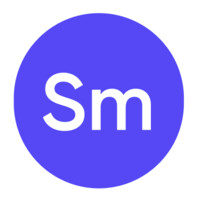
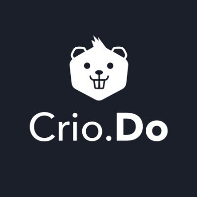

Frontend architecture with product empathy
I work best on platforms where clarity, responsiveness, and trust directly affect how users complete high-value tasks.
I work best on platforms where clarity, responsiveness, and trust directly affect how users complete high-value tasks.
Agile collaboration, component reuse, API integration, testing discipline, and direct stakeholder communication are already part of my operating baseline.
Hackathon winner, HackWithInfy PPO holder, and former technical society lead with a track record of translating ideas into working products.
Selected Work
Each project reflects a different strength: full-stack execution, workflow automation, rapid frontend delivery, or user-facing polish.
Experience
My experience spans enterprise product development, startup execution, and intensive training environments that demanded both technical discipline and iteration speed.
Software Engineer • Dec 2024 - Present • Hyderabad
Digital Specialist Engineer • Oct 2021 - Dec 2024

Fullstack Development Intern • Jun 2021 - Sep 2021

Student Product Developer • Feb 2020 - Apr 2020
Capabilities
Instead of progress bars, this section shows practical skill clusters: interface delivery, backend support, data handling, and workflow tools.
Social Proof
I have not added fabricated testimonials. Instead, this section highlights verifiable achievements and the kind of trust markers recruiters and collaborators actually use.
Hackathon recognition with a cash prize for delivering under competitive constraints.
Cleared HackWithInfy 2020 and converted it into a pre-placement offer from Infosys.
Served as Technical Head for the PARAM technical society at MGMCoET.
Professional references and resume can be shared directly in a hiring or client conversation.
Contact
If you are hiring, exploring collaboration, or want to discuss a product challenge, send a note. The form below drafts an email locally so there is no backend friction.